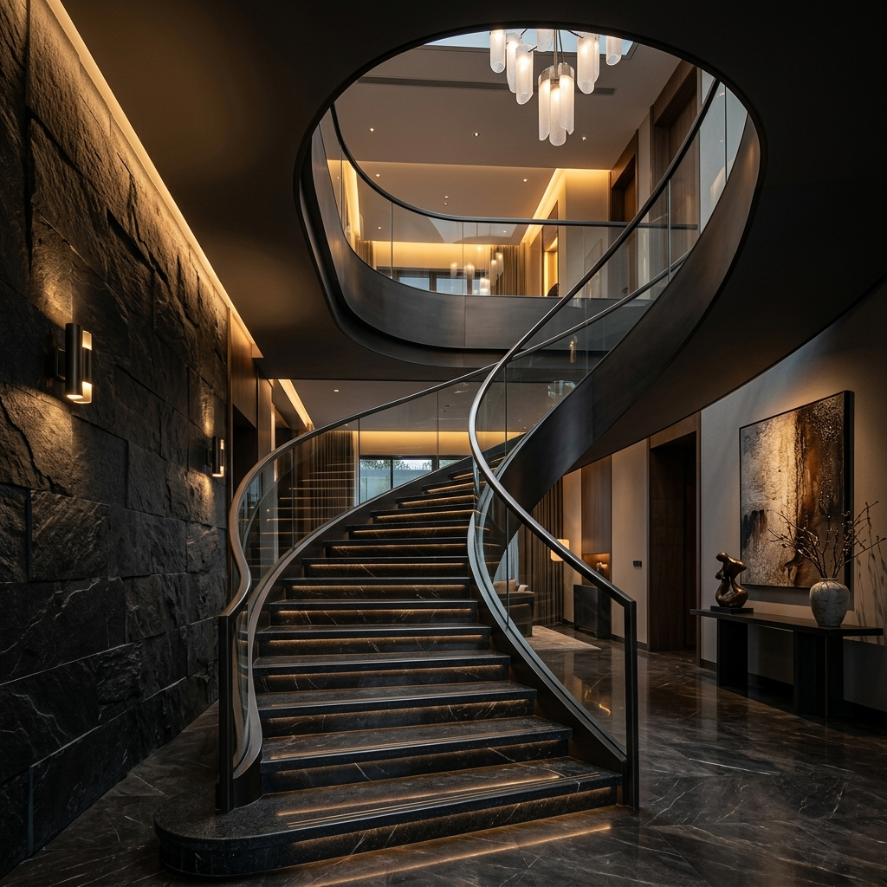
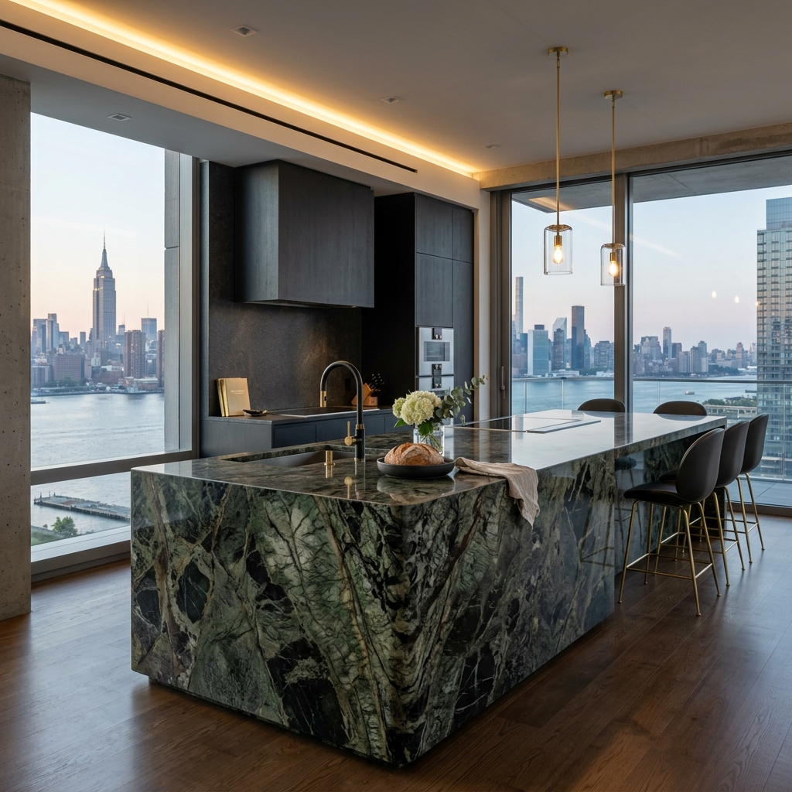

CRAFTED BY
THE EARTH
A curated collection of nature's most exclusive stone, polished to absolute perfection.
The Quarry

Pink Paradise
Exotic texture with deep pink and black veins, reflecting nature's raw intensity.

Kuppam Green
Elegant forest green interspersed with crystalline structures of white and grey.
From Mountain to Masterpiece
01 / Extraction
Sourced responsibly from the most secluded quarries worldwide.
02 / Precision Cut
Diamond-tipped technology ensures flawless geometric purity.
03 / Polish
Hand-finished to achieve a mirror-like depth that captures the light.
Architectural Bespoke

The Grand Ascent
Private Villa, Geneva

Monolithic Core
Penthouse, Manhattan
Crafted by the Earth
Experience the raw beauty of natural stone, meticulously crafted and polished to perfection for your timeless spaces.
THE MASTERPIECE